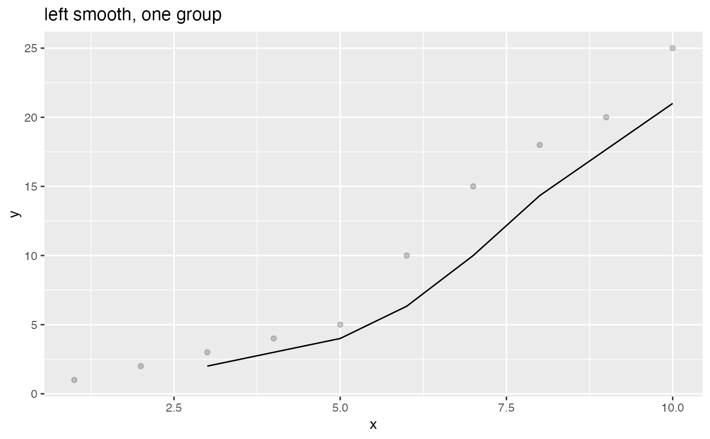

Plot a scatter plot with smoothing line, with smoothing window aligned either left, center or right, xvar is the continuous independent variable and yvar is the dependent binary variable. Smoothing is by a square window of width k
ConditionalSmoothedScatterPlot(frame, xvar, yvar, groupvar, title, ..., k = 3, align = "center")
| frame | data frame to get values from |
|---|---|
| xvar | name of the independent column in frame. Assumed to be regularly spaced |
| yvar | name of the dependent (output or result to be modeled) column in frame |
| groupvar | name of the grouping column in frame. Can be NULL for an unconditional plot |
| title | title for plot |
| ... | no unnamed argument, added to force named binding of later arguments. |
| k | width of smoothing window. Must be odd for a center-aligned plot. Defaults to 3 |
| align | smoothing window alignment: 'center', 'left', or 'right'. Defaults to 'center' |
y = c(1,2,3,4,5,10,15,18,20,25) x = seq_len(length(y)) df = data.frame(x=x,y=y) WVPlots::ConditionalSmoothedScatterPlot(df, "x", "y", NULL, title="left smooth, one group", align="left")